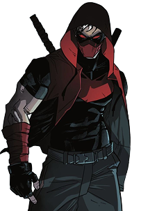
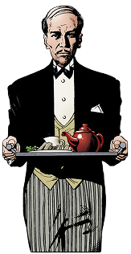
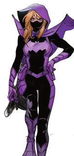
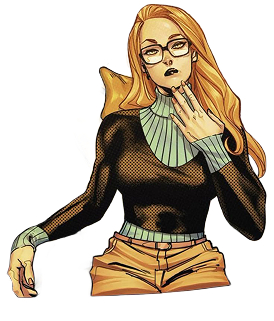
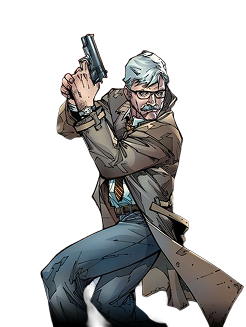

The Family
Over time, the Bat-Family has come to represent the evolution of Batman himself — transforming his crusade from a solitary mission of vengeance into a legacy of hope, trust, and mentorship. What began with Robin grew into a network of vigilantes, detectives, and heroes who reflect different aspects of Bruce Wayne’s character: his compassion through Nightwing, intellect through Tim Drake, discipline through Cassandra Cain, and light through Duke Thomas. Together, they balance Batman’s darkness, proving that his true power lies not in fear, but in the family he inspired — a testament that even in Gotham’s shadows, no one has to fight alone.
Batman's Children
Dick Grayson

First appeared in Detective Comics #38 (April 1940) as Robin, the Boy Wonder. Orphaned circus acrobat adopted by Bruce Wayne, Dick later became Nightwing, leading the Teen Titans and briefly serving as Batman. Known for acrobatics, leadership, and tactical intelligence, he remains one of Gotham’s most versatile heroes.
Jason Todd
First appeared in Batman #357 (March 1983) as the second Robin. Raised in Crime Alley, Jason was killed by the Joker and later resurrected via the Lazarus Pit, returning as Red Hood, blending lethal tactics with vigilantism while remaining connected to Gotham and the Bat-Family.
Cassandra Cain

First appeared in Batman #567 (July 1999). Daughter of assassins, Cassandra was trained to be a weapon from birth. Adopted by Bruce Wayne, she became Batgirl and now operates as Orphan, blending lethal martial arts with empathy and mentorship.
Tim Drake

Debuted in Batman #436 (August 1989). Tim deduced Batman and Nightwing’s identities, becoming the third Robin after Jason’s death and later Red Robin. Known for detective skills, strategic mind, and tech expertise, he leads younger heroes and bridges the Bat-Family’s global operations.
Duke Thomas

Debuted in Batman #21 (March 2014). A member of the “We Are Robin” movement, Duke became The Signal, Gotham’s first daylight vigilante. He possesses metahuman light-based abilities and operates as an unofficial member of the Bat-Family, bridging generations of Gotham heroes.
Damian Wayne

First appeared in Batman #655 (September 2006). Son of Bruce and Talia al Ghul, Damian was trained by the League of Assassins and became Robin at age ten. He struggles to balance lethal skills with Batman’s moral code and has led the Teen Titans while growing into Gotham’s protector.
Batman's Allies
Alfred Pennyworth
First appeared in Batman #16 (April 1943). Alfred serves as Bruce’s butler, mentor, and father figure, providing medical care, tactical guidance, and emotional support. Formerly an intelligence agent, he ensures the operational stability of the Bat-Family.
Stephanie Brown
Introduced in Detective Comics #647 (August 1992) as Spoiler. Briefly Robin and later Batgirl, Stephanie combines martial arts, detective work, and tech skills. Resourceful and endless, she often mentors younger heroes and operates independently while maintaining loyalty to the family.
Barbra Gordon
Debuted in Detective Comics #359 (January 1967) as Batgirl. Daughter of Commissioner Gordon, Barbara later became Oracle after being paralyzed by the Joker, providing intelligence and technical coordination for heroes worldwide, before returning to fieldwork as Batgirl.
James Gordon
Introduced in Detective Comics #27 (May 1939), Commissioner Gordon has been a cornerstone of Gotham’s law enforcement. Balancing collaboration with Batman and the responsibilities of the police force, he is a stabilizing moral presence and a trusted ally in the fight against crime.